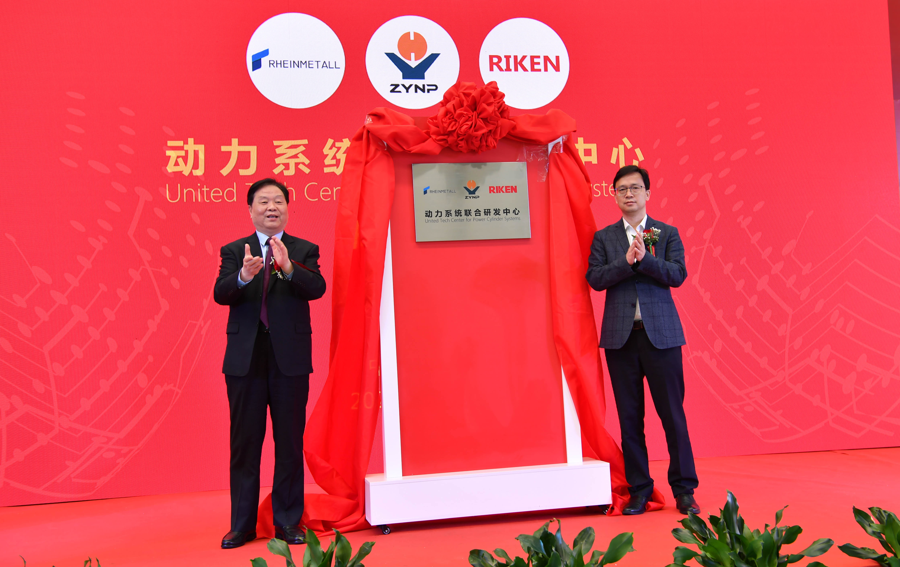

为致力于高效内燃机动力活塞组件系统技术研发和设计，持续满足新一代高效内燃机动力性、可靠性、排放和燃油经济性的要求，3月30日，由德国科尔本斯密特、日本理研、中原内配三方出资联合建设的高效“动力系统联合研发中心”（以下简称“联合研发中心”）在南京揭幕。

♦ 打造行业新业态 赢战碳达峰、碳中和
“联合研发中心的成立是落实‘十四五’规划的新举措，也是满足碳达峰、碳中和目标下对内燃机未来发展要求。”活动现场，动力系统联合研发中心商务总监、中内凯思总经理薛亚辉表示，当前，实现碳达峰、碳中和已是全球愿景，面对节能减排和高质量发展趋势，每个企业都责无旁贷。为此，三方联合组建的研发中心围绕高热效率、低排放等发展方向，实施协同开发，开展技术创新，努力为推动产业转型升级和高质量发展提供强有力的研发力量支撑，为“十四五”开好局、起好步，做好企业应有的贡献。
“联合研发中心的成立突显了强强联合的新效力。”在薛亚辉看来，德国科尔本施密特是全球顶尖的活塞生产企业，日本理研拥有近百年的活塞环研制技术，中原内配更是高端气缸套研制基地，三家公司自成立以来始终都专注于自己所从事的领域，精耕细作，历经近百年专业化发展，业务范围已覆盖全球80%以上的发动机客户。作为行业内第一个跨国合作研发中心，联合研发中心将立足于中国，始终保持与全球先进技术同频共振。“其次，联合研发中心的成立也为中国发动机技术发展贡献新力量。”薛亚辉认为，联合研发中心聚焦行业高端技术发展趋势，以热效率提升、燃油耗降低、高可靠、长寿命、低排放为目标，实现了核心研发技术的本地化应用，大大提高了动力缸模块化、系统化、定制化开发水平，可以为客户提供更加便捷高效的一站式、本地化、创新性的解决方案和技术服务，打造了引领行业技术升级的新模式、新业态。
♦ 擎起创新发展大旗 吹响攻克难关冲锋号
内燃机工业是重要的基础产业，发展至今，已经有一百多年的历史了。当前，新能源汽车的发展给传统内燃机技术带来了巨大挑战，在节能减排政策力度不断加大、国六排放标准实施的背景下，内燃机行业面临着较大的压力。
“中原内配集团作为国际内燃机产业核心零部件制造企业，始终围绕国际领先的新材料技术、制造工艺，持续加大创新力度和提高研发水平，确保产品的可靠性、经济性及180万公里以上的生命周期。”中原内配集团副总裁、股份公司总经理党增军表示，联合研发中心通过与三方强强合作，引入了世界一流的技术，使国内先进技术与欧美、日本技术对标，通过在南京建立联合研发中心，在人才、技术、品牌、管理上加强合作，为客户提供符合更高排放标准的模块化、系统化、定制化活塞动力组件产品。
德国科尔本施密特中国区产品工程总监、动力系统联合研发中心技术总监黄约军也介绍，联合研发中心破解行业技术难关，为内燃机产业高效发展起到了积极推动作用。首先在活塞上开发了超低压缩高技术，最低可以做到47%，气缸套开发了多种高性能材料，为新一代发动机实现强化程度提高和轻量化设计创造条件；其次，活塞开发了头部隔热材料材料技术和先进的冷却技术，气缸套开发了减磨技术、高强度材料和新型结构技术，活塞环开发了PVD CrN和DLC技术，PCU零部件实现协同设计，可帮助整机提高0.6-0.7%的热效率；最后气缸套、活塞和活塞环的协同研发，可为客户提供PCU组件的系统性设计方案，实现模块化供货和系统性服务。
“特别是研发中心的成立打破了PCU模块各自设计的固有模式，能为客户提供更高性价比、系统化、最优化解决方案。”福田康明斯高级采购经理苏义福告诉记者，目前，中国市场PCU零部件基本上都是各自研发、自行设计，然后由整车厂进行评审、验证和改进，导致发动机动力指标、排放指标和可靠性不能一次性开发达标，开发周期长，开发成本高，改进难度大，失效问题得不到有效改善。而PCU零部件模块化设计、模块化供货是未来行业的发展趋势，在欧美国家早已开始。他认为联合研发中心的这种组合模式将会引领行业发展，不仅会使产品生命周期更长、使用成本更低，更会给动力系统的售后服务带来一定的便利性，可以清晰地判断和认定事故的缘由并快速解决。
“可以说，研发中心的成立擎起了行业创新发展的大旗，也吹响了行业攻克难关的冲锋号。”中国内燃机工业协会常务副会长邢敏最后说。